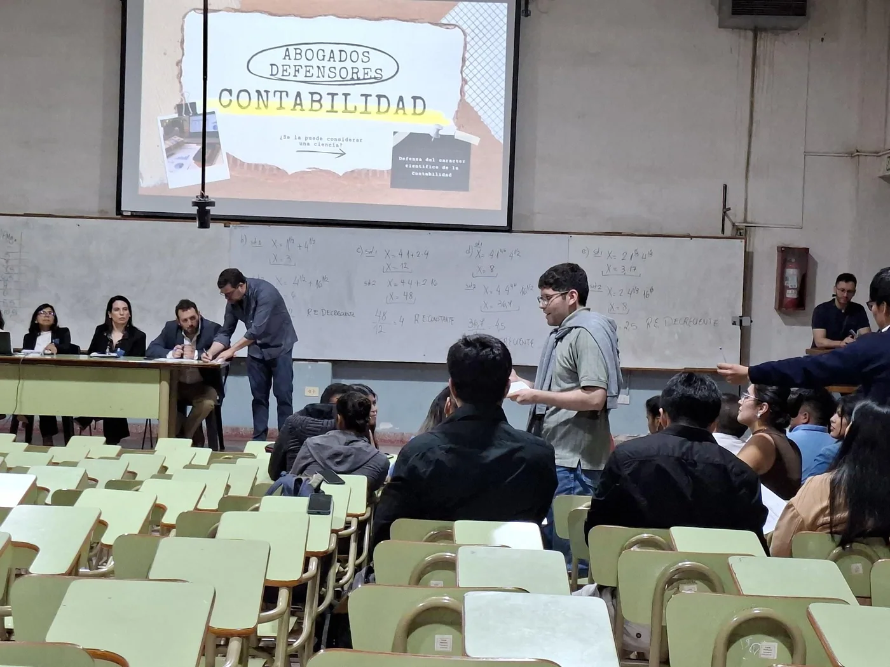

EDICIÓN ESPECIAL · 6 DE OCTUBRE DE 2026
LA CRONISTA DPP
CIENCIAS ECONÓMICASCRÓNICA
DEBATE ACADÉMICO
¿Ciencia, técnica o arte?
La batalla por el banquillo en Ciencias Económicas
Contabilidad, Administración y Economía quedaron frente a frente en dos jornadas de argumentos, testigos, dudas y un veredicto que no cerró del todo la discusión.

En estos últimos días, mientras las personas vivían su vida con normalidad, en una universidad se llevó a cabo un juicio que cambió la mirada sobre la Contabilidad, la Economía y la Administración, con una pregunta central: ¿son realmente ciencias o solo pretenden serlo? A continuación se detallará este juicio, pero ¿cómo terminará el veredicto? ¿Estará a favor de los fiscales o de los defensores de cada disciplina?